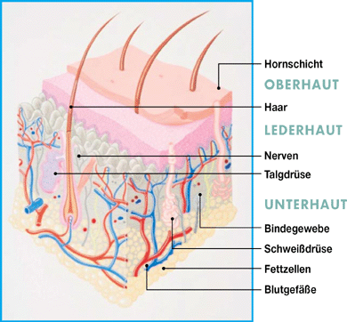

Die Haut ist ein äußerst vielseitiges Organ. Zum einen ist sie Sinnesorgan, das uns über Tastsinn, Berührungs-, Schmerz- und Temperaturempfinden Informationen aus der Umwelt vermittelt.

Hautquerschnitt